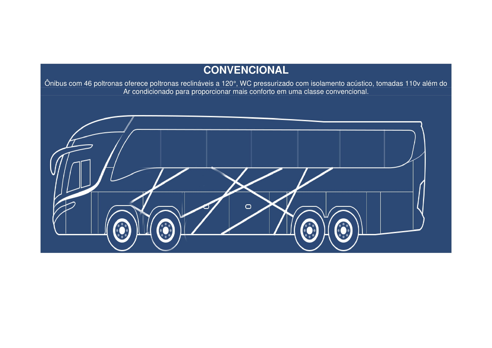
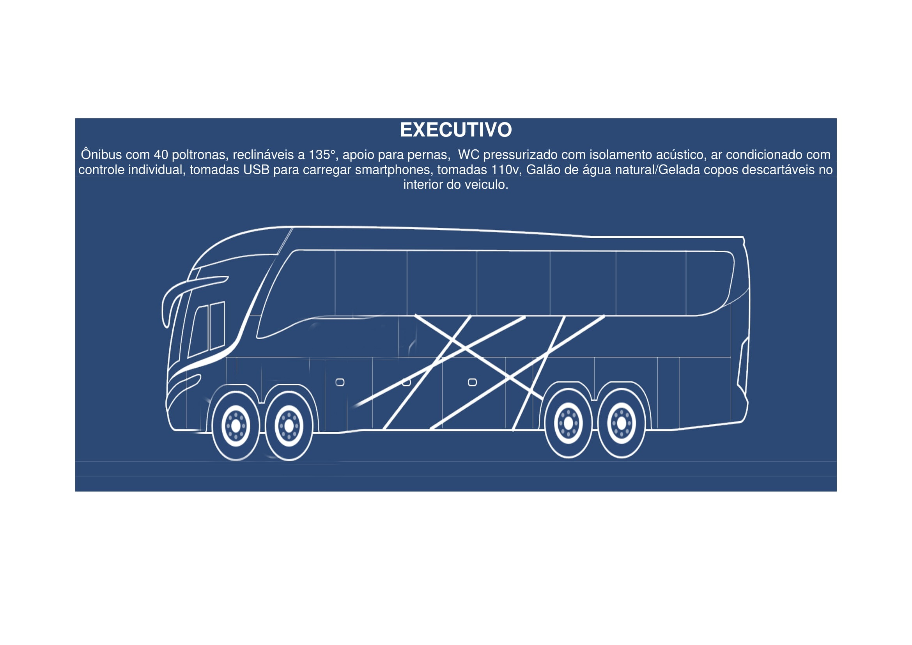
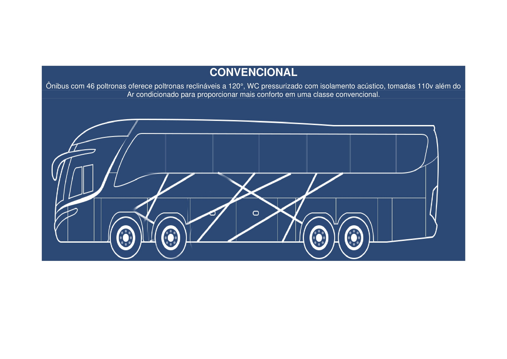
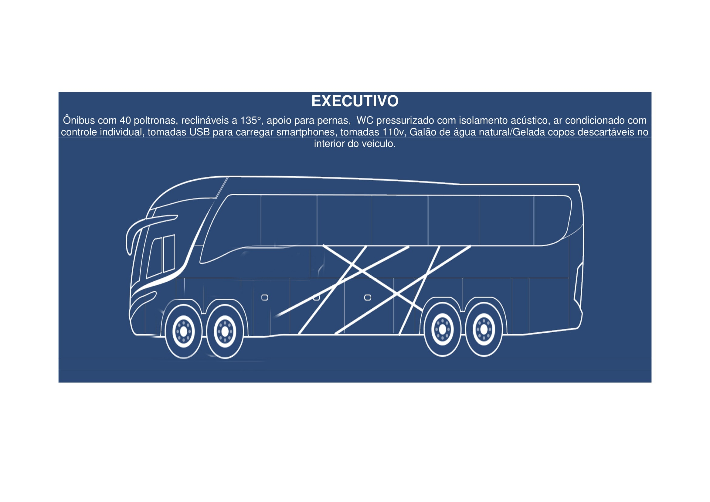

Onibus Convencional
O ônibus convencional é o mais simples e econômico. Possui 50 poltronas acolchoadas e pouco reclináveis. Também é equipado com banheiro e alguns deles possuem ar-condicionado. O modelo é ideal para quem deseja realizar viagens curtas e está com o orçamento apertado.
Onibus Executivo
A principal diferença entre o ônibus executivo e o convencional está no conforto. O espaço entre as poltronas é um pouco maior em comparação ao modelo anterior, reduzindo o número total de lugares no transporte para 46. Possui também apoio para os pés e os assentos reclinam em maior grau. O ônibus executivo é conveniente para quem irá realizar uma viagem de média duração, com aproximadamente 5 ou 6 horas. O ambiente é sempre climatizado, com banheiros e um frigobar com água mineral para os passageiros. Alguns modelos e companhias também disponibilizam televisão e rádio.
Onibus Leito
O ônibus leito é a opção mais confortável – a primeira classe entre as categorias de transporte terrestre. As poltronas oferecem ainda mais espaço para o passageiro e reclinam 180º, ou seja, é possível deitar como em uma cama. Além disso, o apoio para os pés é pensado para garantir um conforto ainda maior. Também é possível contar com um ambiente climatizado, aparelho de televisão com DVD, rádio individual, manta, travesseiro e água mineral. Algumas companhias também oferecem pequenos lanches durante a viagem no ônibus leito. O ponto negativo é o valor da passagem mais elevado. Porém, o custo-benefício compensa para quem deseja fazer uma viagem longa com conforto e tranquilidade.